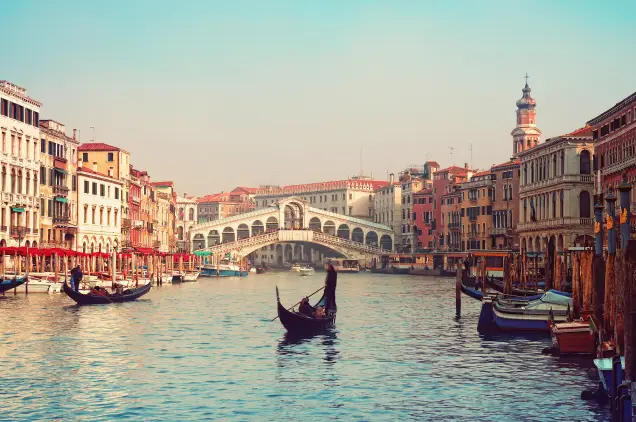

Com beleza incomparável, Veneza fica na região do Vêneto, no nordeste da Itália. Tem cerca de 271 000 habitantes e densidade populacional de 646 hab/km².
Estende-se por uma área de 412 km², incluindo as ilhas de Murano, Burano, Torcello, entre outras na lagoa de Veneza. Veneza é formada por ilhas na Laguna di Venezia.
Está ligada ao Mar Adriático por três aberturas: Lido, Malamocco e Chioggia. A parte de Veneza em terra firme fica na localidade de Mestre.A cidade apresenta 177 canais,
400 pontes destribuídas em 118 ilhas e muitas igrejas cobertas com ouro, mosaicos e afrescos de valor incalculável. Encontra-se a 530 Km de distância de Roma e a 1.111 km de Paris, França.